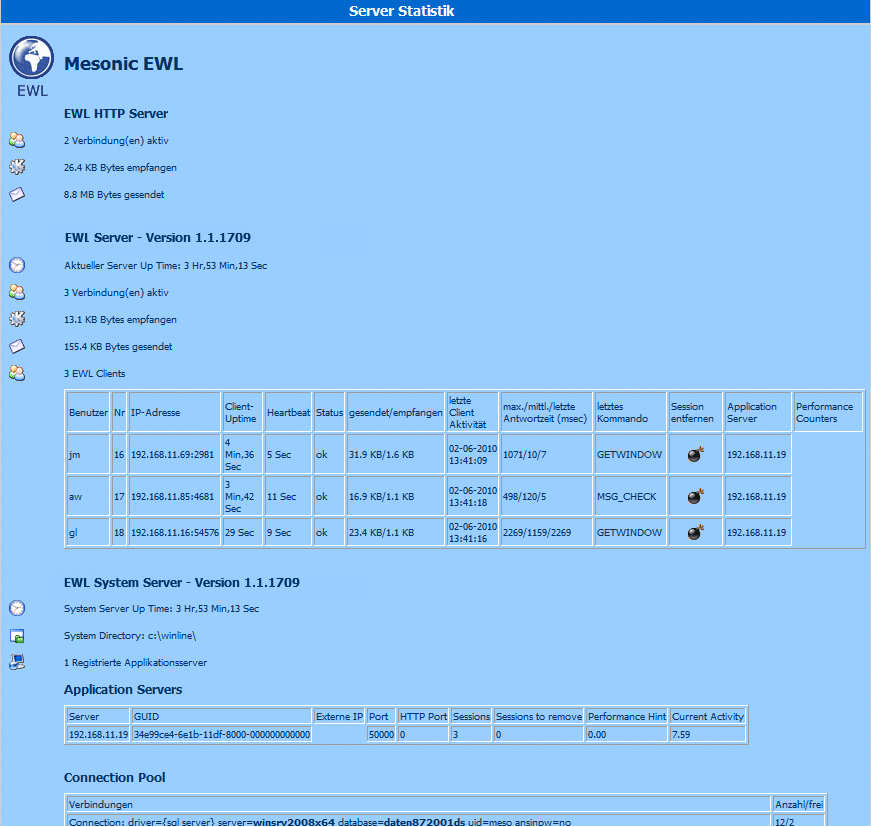

Nachstehend ein Erläuterung zu den EWLHTM-Dateien die sich im "root"-Verzeichnis befinden (wo sich das root-Verzeichnis befindet, ist der Datei "server.config" zu entnehmen bzw. dort einzustellen).
Statistics.ewlhtm
Durch Ansurfen dieser Datei können Informationen zum "Serverzustand" abgerufen werden, wie z.B. wie viele Server aktiv sind, welche Datenmengen übertragen werden, welche Benutzer angemeldet werden, wie viele Datenbankverbindungen benützt werden, usw.
Diese Informationen werden angezeigt wenn diese Seite im Intranet aufgerufen wird. Wird diese Seite von extern aufgerufen, werden entsprechend weniger Informationen angezeigt.

Ebenfalls besteht über diese Seite die Möglichkeit, "inaktive" Clients zu entfernen.
Durch Anwählen des Symbols in der Spalte "Session entfernen" in der jeweiligen Benutzerzeile kann die Session beendet werden. Dazu muss jener Benutzer der die Session entfernen möchte am Rechner in der EWL einmal angemeldet sein und seine Anmeldung gespeichert haben!
Default.ewlhtm
Diese Seite wird vom EWL-Server beim Ansurfen des Servers zurück gegeben und enthält die Anforderungen für das Java WebApplet.
Boot.ewlhtm
Diese Datei wird vom EWL System Server beim Ansurfen zurück gegeben und enthält die Umleitung auf einen EWL Server (von dem aus wieder die Datei "default.ewlhtm" geladen wird).
Error.ewlhtm
Wird verwendet um die event. Fehlermeldungen anzuzeigen.